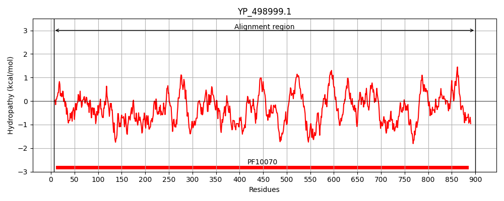
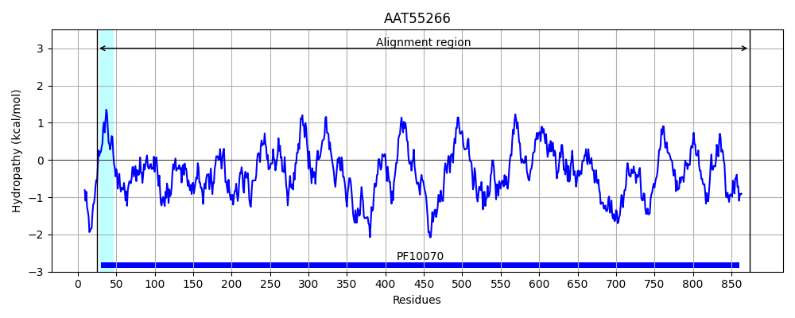
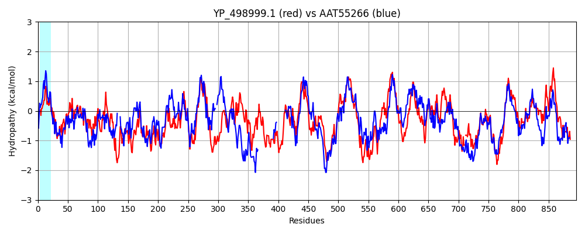

Hit Accession: AAT55266
Hit TCID: 9.A.2.1.3
Hit Description: gnl|BL_ORD_ID|1014 gnl|TC-DB|AAT55266.1|9.A.2.1.3 conserved hypothetical protein [Bacillus anthracis str. Sterne]
Mach Len: 896
e:0.000000
Query TMS Count : 0
Hit TMS Count: 1
TMS-Overlap Score: 0.000000
Predicted Substrates:None
BLAST Alignment:
Score: 2118 , Bit scores: 820 bits, E-value: 0.0e+00, Alignment length: 896, Percentage identity: 46
Query: 6 NINSVIENAKRVITPLSPISIFAARNPWEGLEADTFEDVAKWLRDVRDVDIFPNKALIESAVARGELDESVFNQLVTDMLLEHHYNIPQHYINLYIDNIKTLKDVPASYMNHSNVDVVADLLLEKSKRDMAESYHHYDVRPMSDAIIDEQGEPLSEQVNRQMIKWTKLYIDQFLSSWTMPKREQSFYHAWLHLAQHDHSFTKAQRQVIKGLPNDPEMTIESVLTHFSIDQEDYQAYVEGHLLALPGWAGMLYYRSQQHHFEQHLLTDYLAIRLVVEQLLVGDEFKSVAKDCESRSENWFKQTVASWCYYSDMPSDVLLQHDVNEIQTFIHFAATMNKNVFKNLWLIAWEMTYESQLKQKIKAGHESVAGALDVNQVNVSENDNANQPHSVLLNDTQAVDENNSELNQMGTSTKAQIAFCIDVRSEPFRRHIEAAGPFETIGIAGFFGLPIQKDAVDEQFKHDSLPVMVPPAYRIKEFADRYDMNVYRQQQQTMSSMFYTFKLMKNNVMPSLLLPELSGPFLSLSTIVNSIMPRKSRASLQKIKQKWLKKPETKLTIDREFDRTSDLPVGFTEQEQIDFALQALKLMDLTEAFAPFVVLAGHASHSHNNPHHASLECGACGGASSGFNAKLLAMICNRPNVRQGLKQSGVYIPETTVFAVAEHHTSTDTLAWVYVPDTLSSIALDAYESLNDAMPMISEHANRERLDKLPTI-GRVNHPVEEAQRFASDWSEVRPEWGLAKNASFIIGRRQLTKGIDLEGRTFLHNYDWRKDKDGTLLNTIISGPALVAQWINLQYYASTVAPHFYGSGNKATQTVTSGVGVMQGNASDLMYGLSWQSVMAADRTMYHSPIRLLVVIQAPDYVVARLLANNEHFARKVSNHWLRLMSVNEEGRFKSW 900
NIN ++ +A RVI PL PIS FAA +PW GLE +FE VA WL++ R+VDI+P+ ++I SA A+GE++ES ++ L +++P+ + L+ +P+S ++ ++ +A+ + + M +S ++P+S I ++ G+ LS+ +N +IKW KLY+D +SW MP RE+ FY AW HL D + +K +R+V+K P D + + L+ I + + QAY+EGHLL+LPGWAGM+ +RSQQ EQ LL +YLA+RL +E +V + E + +ASW Y+ D+ + LQ E + FA ++N K LWL AWE T+ QL++KI + + +D + V AQ+AFCIDVRSEPFRRH+E GPFET GIAGFFGLPI + H SLPV++ P ++IKE D + Y Q++ SS+ YTFK MK NV+ S+LLPE+SGP L L + S +PR+ ++ +++ L+KP+T +++ D ++P+GFT++E++++ Q LK++ LTE FAP VV+ GH+S S NNP+ A+LECGACGGA+ GFNA++ A +CN P VR+ L G+ IP+ T+FA AEH T+ D L W+YVP+ LS A +A++ + MP +S+HANRERL +LP ++ +P +EA RFA DWSE+RPEWGLA+NASFIIG+R+LT+ DLEGR FLHNYDW++D+ G +L II+GP VAQWINLQYYASTVAPH+YGSGNKATQTVT+G+GVMQGNASDL+ GL WQSVM +DR YHSP+RLL+VIQAP + RLL NN F KV N W+RL SV+ EGR+K+W
Sbjct: 25 NINDLVVSASRVIAPLWPISTFAAHHPWMGLEKQSFEQVANWLKEARNVDIYPSASMIHSAKAKGEIEESFLQIALSRWLDSQSFHMPRETAERFCQEALKLERLPSSLLSSPELNKLAEEINYVNTGSMKDS----SMQPISSLIENQNGDNLSDILNYHIIKWCKLYLDDAGASWAMPNREKGFYRAWQHLITFDPALSKTERKVLKDWPEDALIALTKALSELGISESNMQAYLEGHLLSLPGWAGMIRWRSQQSIEEQELLIEYLAVRLSMELAIVKPYLPLKNQKVEKKVS--IVPLIASWIYWGDISIEKWLQMSATEQSELLAFAYRFDENTRKKLWLEAWEQTHAEQLREKIASKQRAT-------------------------HDKKRV--------------VAQLAFCIDVRSEPFRRHLEKLGPFETFGIAGFFGLPIATTELGSNDSHPSLPVILKPKHQIKELTDENECKSYEQRKMVGSSVRYTFKTMKQNVLTSMLLPEVSGPLLGLQMVTRSFVPRRVGGFIRNLRKNMLQKPDTTFSLNHVHDTNCEIPIGFTKEEKVNYVRQTLKMVGLTEGFAPLVVMCGHSSQSTNNPYAAALECGACGGAAGGFNARVFATLCNLPEVREALSAEGIKIPDDTIFAAAEHKTTVDELEWIYVPE-LSETAQEAFDCIEAIMPNVSQHANRERLMQLPHFKTKIKNPSKEAHRFAEDWSEIRPEWGLARNASFIIGQRELTQECDLEGRAFLHNYDWKQDESGDILANIIAGPGTVAQWINLQYYASTVAPHYYGSGNKATQTVTAGLGVMQGNASDLLPGLPWQSVMQSDRETYHSPLRLLIVIQAPTKYIERLLNNNFTFREKVQNGWVRLASVDPEGRWKNW 874 | Protein Hydropathy Plots: | |
|---|---|
|  |  |
Pairwise Alignment-Hydropathy Plot: | |
|  | |